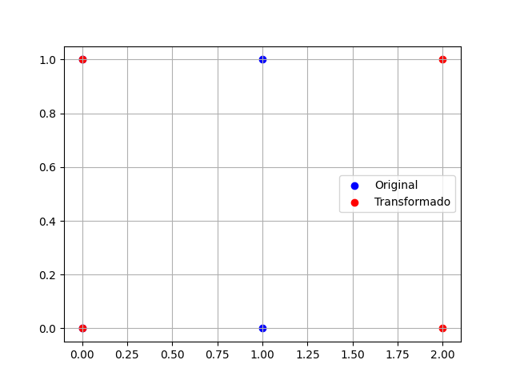

En álgebra lineal, una matriz es una disposición rectangular de números, símbolos o expresiones, organizados en filas y columnas. Las matrices se utilizan ampliamente en diversos campos como la física, la informática, la economía, entre otros.
Una matriz de dimensión m x n (m filas y n columnas) se representa de la siguiente manera:
La suma de matrices se realiza sumando los elementos correspondientes:
Se multiplica cada elemento de la matriz por el escalar:
La multiplicación de matrices se define de la siguiente forma:
El determinante de una matriz cuadrada se calcula de distintas maneras, dependiendo del tamaño de la matriz:
La matriz inversa \(A^{-1}\) existe solo si el determinante no es cero, y se calcula mediante:
import numpy as np
# Definimos matrices A y B
A = np.array([[1, 2], [3, 4]])
B = np.array([[5, 6], [7, 8]])
# Suma de matrices
C = A + B
print("Suma de matrices:\n", C)
# Producto de matrices
D = np.dot(A, B)
print("Producto de matrices:\n", D)
# Inversa de A
inv_A = np.linalg.inv(A)
print("Inversa de A:\n", inv_A)
Suma de matrices:
[[ 6 8]
[10 12]]
Producto de matrices:
[[19 22]
[43 50]]
Inversa de A:
[[-2. 1. ]
[ 1.5 -0.5]]
La matriz transpuesta de una matriz A se obtiene intercambiando sus filas por columnas. Si A es una matriz de tamaño m × n, su transpuesta AT será de tamaño n × m. Formalmente:
Sea la matriz \( A \):
\[ A = \begin{bmatrix} 1 & 2 & 3 \\ 4 & 5 & 6 \end{bmatrix} \]
Su transpuesta es:
\[ A^T = \begin{bmatrix} 1 & 4 \\ 2 & 5 \\ 3 & 6 \end{bmatrix} \]
El rango de una matriz es el número máximo de filas (o columnas) linealmente independientes. Se puede calcular mediante la forma escalonada reducida por filas.
Ejemplo en Python:
import numpy as np
A = np.array([[1, 2, 3], [4, 5, 6], [7, 8, 9]])
rank = np.linalg.matrix_rank(A)
print(rank)
Salida en consola:
2La traza de una matriz \( A \) de tamaño \( n \times n \) se define como:
\[ \operatorname{tr}(A) = \sum_{i=1}^{n} A_{ii} \]
Ejemplo:
Sea la matriz \( A \):
\[ A = \begin{bmatrix} 1 & 2 & 3 \\ 4 & 5 & 6 \\ 7 & 8 & 9 \end{bmatrix} \]
Su traza es:
\[ \operatorname{tr}(A) = 1 + 5 + 9 = 15 \]
Un sistema de ecuaciones lineales puede resolverse usando matrices de diversas formas, como la inversa de la matriz de coeficientes o la eliminación de Gauss.
Ejemplo en Python:
import numpy as np
A = np.array([[2, 1], [1, -1]])
b = np.array([4, 1])
sol = np.linalg.solve(A, b)
print(sol)
Salida en consola:
[3. 2.]Podemos visualizar la acción de una matriz de transformación sobre un conjunto de puntos en 2D. Utilizando Python con Matplotlib:
import numpy as np
import matplotlib.pyplot as plt
# Definimos los puntos
points = np.array([[0, 0], [1, 0], [0, 1], [1, 1]])
transform = np.array([[2, 0], [0, 1]])
transformed_points = points @ transform.T
# Graficamos
plt.scatter(points[:, 0], points[:, 1], color='blue', label='Original')
plt.scatter(transformed_points[:, 0], transformed_points[:, 1], color='red', label='Transformado')
plt.legend()
plt.grid(True)
plt.show()
Este código muestra cómo la matriz transforma el cuadrado original en un rectángulo.
